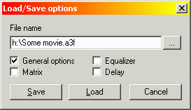
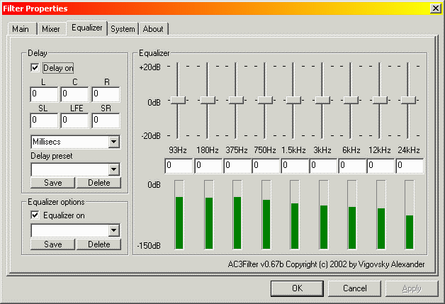

AC3Filter - e' un filtro DirectShow per la decodifica AC3 utile nella
riproduzione di file .AVI con tracce audio AC3 e MPEG2 (DVD). Questo
programma e' distribuito gratuitamente (FREEWARE, OpenSource).
La documentazione corrente si basa sulla versione
0.67b del programma. Versioni piu recenti del software potrebbero
differire da quanto illustrato nella guida per questo motivo e
consigliabile consultare la versione in lingua
inglese della documentazione, costantemente aggiornata.
Caratteristiche principali:
- Conforme pienamente allo standard AC3.
- Supporto S/P DIF passthrough.
- Decodifica flussi MPEG2 PES.
- Supporto per output multicanale.
- Supporto LFE.
- Supporto per Dynamic Range Compression (DRC).
- Controllo overflow e del guadagno (automatico).
- Livelli di controllo del guadagno.
- Informazioni Bitstream (formato canale, velocita' di bit,
frequenza di campionamento, frequenza di aggancio e massima
frequenza).
- Livelli di Input/output.
- Matrice di missaggio con controllo diretto del missaggio stesso.
- Missaggio sorgenti stereo in multicanale.
- DolbySurround/ProLogic/ProLogicII downmixing.
- Possibilita' di impostare ritardi per ogni canale.
- Equalizzatore.
Progetti relativi:
MatrixMixer - Abilita l'upmix su qualsiasi sorgente audio (non
solo AC3) compreso il formato 5.1 (basato sulla matrice di missaggio
AC3Filter).
WinampAC3 - Plug-in per la riproduzione multicanale AC3 con
Winamp (basato sullo stesso decoder di AC3Filter).
LibA52 - Libreria di decodifica AC3 crossplatform (da Michel
LESPINASSE).
Contenuti
Download.
Per versioni aggiornate del programma visitate:
http://ac3filter.sourceforge.net
- homepage
http://sourceforge.net/projects/ac3filter
- homepage del progetto su Sourceforge (report bug, richiesta nuove feature e altro...)
http://sourceforge.net/forum/?group_id=66022
- Forum dedicato ad AC3Filter
Tutte
le versioni disponibili:
http://sourceforge.net/projects/ac3filter
ac3filter ver $ver
$download_bin - binario (eseguibile)
$download_src - sorgenti
Installazione.
Cliccate sull'icona del programma e sara'
automaticamente avviata la procedura di installazione del software!
Se state utilizzando Windows 98 Simplified Chineese
e la finestra di dialogo dei filtri ha dimensioni troppo ridotte provate
utilizzando la patch denominata dialog_patch.exe (lanciate
nuovamente la patch per ripristinare lo stato iniziale del sistema).
Per le normali operazioni sui filtri non sono
richiesti file aggiuntivi ma sono disponibili in versioni stand-alone
per una maggiore comodita'. L'unico modulo richiesto e' AC3filter.ax. In
aggiunta c'e' anche il modulo del Pannello di Controllo per la
configurazione del programma. Per W2K+ può essere registrato utilizando
la chiave di registrazione [HKLM\Software\Microsoft\Windows\CurrentVersion\Control
Panel\Cpls]. Per una migliore compatibilita' con l'ambiente
operativoWindows98 il modulo di controllo e' copiato all'interno della
cartella di installazione di Windows in formato .cpl.
Disinstallazione.
Lanciate l'apposita utility di dinstallazione dal
menu dei programmi o tramite Pannello di Controllo.
Attenzione: tutte le
matrici e i settaggi utenti definiti saranno dopo l'installazione
andranno perduti!
Impostazione del sistema.
Se l'installazione e' stata portata a termine con
successo nella maggior parte dei casi il filtro funzionera' fin da subito.
La modalita' di funzionamento che assicura la
maggiore compatibilita' e' la "stereo mode". Dovrebbe funzionare
correttamente in qualsiasi versione di Windows e con qualunque scheda
sonora installata.
Alcuni driver (Creative, in particolare) non
aggiornano le impostazioni in 'Control Panel->Sounds and
Multimedia->Audio->Sound Playback->Advanced' dopo le
modifiche apportate alla configurazione degli altoparlanti durante
all'installazione. Per questo motivo controllate il modulo "Suoni e
periferiche audio".
Dopo l'installazione al filtro e' assegnata
priorita' massima, cio' significa che verra' utilizzato al posto di
qualsiasi altro decoder AC3 installato sul sistema. Se per un motivo o l'altro
aveste necessita' di utilizzare un decoder differente potreste impostare
a livelli di priorita' minimi il decoder con l'icona 'Prefer other
decoder'. Per ripristinare la priorita' massima cliccate su 'Prefer
AC3Filter'. Quest'operazione e' necessaria per il player NVDVD
prodotto da nVidia. NVDVD infatti utilizza un decoder proprietario e nel
tentativo di caricare AC3Filter interrompe bruscamente l'esecuzione.
La scheda sonora puo' lavorare in due modalita':
DirectSound e WaveOut. Se si verificassero problemi usando questo filtro
(ad esempio l'uscita SPDIF non funzionasse piu' correttamente) l'altra
modalita' di funzionamento potrebbe rivelarsi risolutiva. Alcuni player
multimediali (BSP) hanno impostazioni personalizzate per l'opzione ma la
maggior parte dei riproduttori fa riferimento alle impostazioni
predefinite di Windows. Per cambiare modalita' sono disponibili due
icone dal menu di avvio: 'Use DirectSound' per abilitare DirectSound
come interfaccia predefinita; 'Use WaveOut' per abilitare WaveOut come
interfaccia predefinita.
Alcuni filtri audio non supportano la modalita'
multicanale (DeDynamic ad esempio). I player piu' evoluti hanno propri
filtri di codifica audio integrati (gli equalizzatori) che non
supportano il formato multicanale. In tal caso AC3filter passera'
automaticamente alla modalita' stereo non consentendo di variare tale
modalita' durante la riproduzione. Altri filtri, invece, possono
supportare audio multicanale ma in modo scorretto (ad esempio il canale
centrale potrebbe essere desincronizzato o del tutto assente). Per
evitare questi problemi si consiglia di non installare il "filter-pack"
e di rimuovere dal sistema tutti i filtri non necessari.
Tra i filtri piu' problematici c'e' mmswitch
(filtro che supporta .avi e DVD con piu' tracce audio e consente il
cambiamento dall'una all'altra durante la riproduzione, ideale per i
film con multiaudio). Se per la maggiore utilizzate il PC per guardare
DVD e' preferibile disinstallare questo filtro ed utilizzare il parser
MPEG2 che supporta gli streaming audio direttamente (un esempio puo'
essere l'MPEG2 Splitter). In aggiunta utilizzerete un minor
quantitativo di tempo-CPU. Se il parser MPEG2 non supportasse il
cambiamento di stream (flusso audio) come per le Elecard
verrebbero create piu' catene di rendering audio processate
simultaneamente ma soltano una tra queste sarebbe effettivamente in
riproduzione.
Se proprio non poteste fare a meno di mmswitch
ci sarebbero le seguenti possibilita':
- Tutti gli stream audio (flussi audio) in formato AC3. Per il
corretto passaggio da uno stream all'altro tutti i decoder
dovrebbero avere lo stesso formato di output.
- Il primo stream in AC3, il secondo in MP3 (o qualsiasi altro
formato purche' non multicanale). Prima di passare allo stream mp3,
l'AC3 deve figurare a 16bit stereo.
- Primo stream audio MP3 secondo in AC3. Prima di passare all'AC3,
il filtro deve essere configurato a 16bit stereo. Il formato di
output e' impostabile anche dopo il cambiamento.
Windows 98
Come impostazione predefinita Windows 98 non supporta
il formato multicanale e l'SPDIF.
Per prima cosa, quindi, e' necessario scaricare ed
installare la patch seguente per il WaveOut resa disponibile da
Microsoft:
server1: ftp://ftp.as
us.com.tw/pub/ASUS/beta/mb/driver/269601USA8.EXE
server2: ftp://downloa
d.intel.com/design/motherbd/bt2/269601USA8.EXE
server3: http://AC3filter
.sourceforge.net/download/269601USA8.EXE
Ulteriori dettagli sulla patch sono riportati presso http://www.microsoft.com/hwdev/tech/audio/Non-PCM.asp.
Fatto cio' impostate come periferica di riproduzione
predefinita "WaveOut Device".
Se avete completato i passi seguenti correttamente i
piu' diffusi player e l'uscita SPDIF funzioneranno correttamente sul
vostro computer!
Win2K
E' caldamenta raccomandata l'installazione del
Service Pack 2 (SP2).
Impostazione dei player.
I player piu' diffusi sul mercato non richiedono
impostazioni aggiuntive poiche' generalmente il filtro e' usato in modo
trasparente.
BSPlayer
Nelle impostazioni del player (Options->Preferences)
impostate:
- General->Don't load AC3 settings: selezionato
- Audio->For AC3 decoding use: '--'
- Audio->Use DeDynamic filter: deselezionato. (DeDynamic non
supporta la modalita' audio multicanale!)
ZoomPlayer
Per riprodurre file AVI il player non richiede
configurazioni aggiuntive. Se tuttavia adottarlo come
riproduttore DVD (invece di usare programmi dedicati come PowerDVD o
WinDVD) con AC3Filter sono richiesti i file seguenti:
http://AC3filter.sourceforge.net/download/AC3Filter-
InterVideo.dvdgraph (per l'uso con il decoder video InterVideo)
http://AC3filter.sourceforge.net/download/AC3Filter-
CyberLink.dvdgraph (per l'uso con il decoder video CyberLink)
http://AC3filter.sourceforge.net/download/AC3Filter-
Elecard.dvdgraph (per l'uso con il decoder video Elecard)
http://AC3filter.sourceforge.net/download/AC3Filter-
FhG.dvdgraph (per l'uso con il decoder video Fraunhofer)
Salvate i file nella cartella
...\ZoomPlayer\DVDGraph. Nelle impostazioni del player invece Player
Options->DVD->DVD Setup scegliete l'impostazione opportuna a
seconda del decoder video installato.
Configurazione del filtro.
Il filtro puo' essere utilizzato in vari modi.
L'ideale sarebbe che il player stesso consentisse di ridefinirne le
proprieta' (WMP 6.4, BSP, Sasami, ecc... non WMP 7, 8, 9!). Ad
esempio con WMP 6.4 la lista dei filtri e' accessibile tramite File-
>Properties->Advanced:
Se il player non consente di modificare le
proprieta' del filtro e' necessario configurarlo tramite il programma 'AC3Filter
Config' nel Pannello di Controllo di Windows. Questo metodo
tuttavia non influenza gli stream audio in elaborazione ne' riflette lo
stato attuale del sistema! I livelli I.e. non cambieranno, le
informazioni bit-stream mostreranno solo degli zero ecc. Oltre a cio'
tutti i player dovranno essere chiusi (quando il player e'
chiuso salva le impostazioni del filtro nei Registro ed in tal modo i
valori salvati possono essere modificati da AC3Filter e resi
disponibili all'avvio dell'applicazione). E'
caldamente consigliato configurare il filtro dall'interno del player
quando possibile (tra i player che lo consentono: BSPlayer, Sasami,
ZoomPlayer, LightAlloy, ecc...). In tal modo potrete valutare in tempo
reale i cambiamenti apportati al flusso audio. Sono sconsigliati quindi
riproduttori come Windows Media Plater v7, 8, 9.
Impostazioni principali
Nell'immagine troverete la finestra principale
del programma (livelli e informazioni di bitstream sono disponibili solo
invocando le proprieta' del filtro dal player):
* Informazioni bitstream
Nella parte superiore a sinistra della finestra e'
contenuta la sezione "bitstream information" (BSI):
- Ñhannels - la configurazione dei canali nel formato
front_channels/surround_channels + LFE (canale per effetti Low
frequency). Nel nostro caso 3 frontali, 2 surround e canal iLFE , si
tratta di una configurazione 5.1.
- Sample rate [kHz]
- Bitrate [bps]
- Freq (coupl/high) - [kHz], frequenza di accoppiameno e
massima frequenza decodificata. Alcuni canali AC3 (solitamente tutti
i canali) sono raggruppati in un unico canale a partire da
specifiche frequenze - la frequenza di accoppiamento e' salvata
proprio in questo campo e visualizzabile nei dettagli "bitstream
information". I canali sono del tutto indipendenti solo in determinati
interfalli di frequenza - fino alla frequenza di accoppiamento. Il campo
High frequency riporta la massima frequenza decodificata, e
definisce quindi la massima frequenza del flusso audio.
- Frames/errors - numeto totale di frame decodificati e degli
errori occorsi durante la decodifica.
* Switch per la configurazione degli altoparlanti (Speaker
configuration switch).
Nella parte inferiore sinistra c'e' un pulsante
dedicato alla configurazione degli altoparlanti. Definisce che che modo
i canali AC3 saranno missati per l'output su speaker. Le configurazioni
sono mostrate nel formato front_channels/surround_channels + subwoofer
con flag (SW). Alcune configurazioni sono riportate con il nome di uso
comune. Qual'e' la differenza tra LFE esubwoofer? Corrette a leggere
quanto riportato nella sezione What is LFE?.
Le modalita' 'Dolby Surround/ProLogic'
indicano che tutti i canali presenti nello stream AC3 saranno missati in
due canali in modo che il decoder Dolby Surround/Pro Logic possa
processarli correttamente. La modalita' 'Dolby ProLogic II' e'
simile alla DPL ma si differenzia per il decoder DPL II. Il DPLII e'
supportato solo in modo sperimentale per la scarsita' di informazioni
attendibili su questo standard.
La modalita' 'SPDIF' indica che il flusso AC3
sara' automaticamente indirizzato sull'uscita digitale della scheda
sonora senza alcuna modifica. Attivando questa opzione non sara'
possibile definire impostazioni aggiuntive sul flusso audio di output.
Il campo 'Sample format' (formato di
campionamento) definisce il formato di output del flusso audio. Tra le
opzioni disponibili: formato PCM 16 bit, 24, 32 bit e PCM Float. Non
tutti i formati sono supportate dalle schede audio in commercio per cui
impostate con cura tale opzione.
* Gain levels. Il pulsante centrale e' dedicato ai livelli di
guadagno.
- Master - livello di guadagno desiderato
- Gain - mostra il livello di guadagno corrente
- LFE - livello di guadagno per il canale LFE
- Voice - livello di guadagno per il canale centrale
(dedicato ai dialoghi)
- Surround - livello di guadagno per i canali surround
- BSI Lock - blocca il livello di guadagno del canale ai
valori forniti dalle impostazioni standard. Non e' possibile
intervenire sui livelli Voice, LFE e surround se l'opzione e'
attivata
- Normalize - normalizzazione audio ad una singola passata.
(per ulteriore dettagli consultare Impostazioni
Mixer).
I controlli Master e Gain determinano
il livello sonoro complessivo del flusso audio. Il controllo Master
definisce il livello di guadagno desiderato. Se il livello sonoro e'
troppo alto e si verificano distorsioni e' bene diminuirlo intervenendo
proprio su questo controllo. Il livello di guadagno corrente e'
visualizzabile tramite il controllo Gain.
* Dynamic range compression.
L'AC3 e' un formato fondamentalmente logaritmico. I
sample sono salvati in formato: esponente + mantissa. Parlando di bit 1
sample puo' essere lungo anche 40bit (solo in teoria) o raggiungere i
24bit (risoluzione predefinita). Cio garantisce un'ampio range dinamico
(ma, come disse Einstein, "tutte le cose buone in questo mondo sono
relative" :-)): i suoni piu' bassi con un basso livello se riprodotti da
una scheda sonora con meno di 16 bit risulteranno non udibili come
tutto il resto dell'audio al di sotto di questo livello assoluto (=>
elevata distorsione). Per risolvere questo inconveniente e' stata
adottata la tecnica della compressione dinamica. Alla base di questa
idea c'e' un algoritmo che provvede ad incrementare il livello in
presenza di suoni bassi (e viceversa) prima di eseguire la conversione
nel formato16-bit. Ci sono speciali matrici nello stream AC3 dedicate
proprio alla variazione del livello sonoro. Le scelte sulla dinamica
audio sono prese dai responsabili in fase di produzione durante la
preparazione del mastering al fine di preservare la migliore qualita'
sonora. Il DRC level indica proprio questo livello. Con la
checkbox Use DRC puoi attivare/disattivare l'utilizzo del DRC. (naturalmente
quanto riportato di seguito e' una semplificazione del reale processo
di elaborazione).
I controlli DRC Power consentono di definire
il cambiamento del livello sonoro DRC level. Aumentando il
valore di DRC Power i suoi piu' bassi saranno accentuati e quelli
piu' alti saranno attenuati. Diminuendo invece il valore del controllo DRC
Power sara' automaticamente ridotto il range di compressione
dinamico anche se gli effetti saranno meno vistosi di quanto illustrato
in precedenza. Impostando a 0 il livello DRC Power il range
dinamico di compressione sara' applicato secondo le impostazioni
predefinite della sorgente.
* CPU load.
Mostra il livello di carico della CPU per
l'elaborazione e la decodifica della sorgente audio. Saranno inclusi nel
valore mostrato tutti i processi di elaborazione (se esistenti).
* Input/output levels.
Parte destra - indicatori di livello. Tutti i
livelli sono espressi in scala logaritmica. Il livello di input mostra
la configurazione reale dei canali audio. Spesso potrebbe
accadere che il BSI mostri 5.1 anche se il canale LFE fosse assente.
* Presets
La finestra a tendina e i pulsanti subito in
basso possono essere utilizzati per caricare, salvare, rimuovere
configurazioni personalizzate (presets). Alcuni preset sono gia'
disponibili fin dalla prima installazione del programma:
- standard - compatibilita' massima
- one-pass normalize - come da etichetta, per incrementare
l'intensita' sonora della sorgente.
- LFE boost - LFE incrementato di +10dB.
In
aggiunta e' possibile caricare/salvare preset da/su file con il pulsante file:

Il file di configurazione puo' avere lo stesso nome
del filmato (si tratta dell'opzione predefinita). In tal caso sarebbe
automaticamente caricato all'apertura del filmato stesso.
Le impostazioni del filtro sono suddivise in varie
categorie. Raccomandiamo caldamente di salvare solo le impostazioni
generali (e volendo quelle dell'equalizzatore) nei file di
configurazione autocaricati (puiche' potreste volere utilizzare queste
impostazioni su un altro sistema per la visione del filmato). Le
impostazioni non salvate nel file di configurazione non intaccheranno
la configurazione corrente al caricamento del file stesso.
Impostazioni Mixer
Nella seconda pagina sono riportate le impostazioni
di configurazione del Mixer..
Il controllo principale e' costituito dalla matrice
di missaggio (mixing matrix). Nel formato adottato per la
rappresentazione della matrice di moltiplicazione: S' = M S, dove S = {
L, C, R, SL, SR, LFE } - sample di input, S' = { L', C', R', SL', SR',
SW' } - sample di output.
Piu' semplicemente per ogni singola cella vige la
regola seguente: e' missato il canale specificato dalla colonna dal
canale specificato dalla riga con il guadagno specificato nella cella
stessa. Se ad esempio voleste indirizzare il canale sinistro
sull'altoparlante destro dovreste impostare il valore 1 nella cella in
corrispondenza della colonna 'L' e della riga 'R'. Per non ascoltare il
canale sinistro dall'altoparlante sinistro, invece, sarebbe sufficiente
inserire il valore 0 in corrispondenza della colonna 'L' e della riga
'L'. Operando operazioni analoghe anche con il canale destro e con il
canale di surround si otterrebbe lo swapping completo dei canali (Nota
che andrebbero scambiate anche le righe 'L' e 'R').
Per maggior chiarezza e' opportuno fare alcune
distinzioni tra il canale di input e di output. Il canale di input e'
codificato nel flusso AC3. Il canale di output e' quello che alla fine
ascoltate dagli altoparlanti.
I valori sulle righe determinano cosa ascolterete
dal corrispondente canale di output. Nella matrice e' rappresentato da
parte del canale sinistro di input, parte del canale centrale, parte del
canale destro, parte dal canale sinistro surround attenuato, dal canale
destro surround attenuato e dal canale LFE (in questo esempio la matrice
ha canale sinistro, canale centrale, canale sinistro attenuato, e
canale LFE).
I valori sulle colonne quali canali di input saranno
soggetti a missaggio. Per la matrice mostrata il canale centrale e'
stato riindirizzato sul canale sinistro e destro per un fattore pari a
0.7. In tal modo il canale centrale sara' ripartito in egual modo tra
canale sinistro e canale destro. Se desiderate variare il bilanciamento
del canale centrale riindirizzato modificate semplicemente il fattore
impostato in precedenza!
Se l'opzione Auto matrix e' attivata la
matrice e' automaticamente calcolata ed i campi aggiornati per
rifletterne le nuove impostazioni. Ad esempio cambiando il livello di Center
noteremo cambiamenti alla colonna 'C'.
Per convenienza alcuni controlli nella pagina
principale sono stati spostati in questa sezione. Per una descrizione
accurata dei controlli consultate le Impostazioni
principali.
Descrizione delle impostazioni disponibili:
- Auto gain control - controllo automatico del guadagno. Per
la gestione del livello di guadagno (al fine di evitare overflow).
Il guadagno corrente e' mostrato dal livello Gain. Se questa
opzione e' disattivata potrebbero verificarsi, presenza di livelli
di segnali alti, indesiderati effetti di distorsione del segnale
audio. Se l'opzione e' attivata, invece, il livello di guadagno
corrente sara' costantemente monitorato dal programma e decrementato
per prevenire overflow del segnale. Il comportamento del sistema dopo un
overflow e' determinato dall'opzione One- pass norm. Se
One-pass norm e' disattivata, il livello di guadagno corrente sara'
gradualmente ripristinato al livello del controllo Master.
In tal caso Master definisce il livello di guagnano finale
dopo un overflow. L'overflow puo' verificarsi in vari casi e
circostanze determinando sgradevoli effetti di 'salto' nel segnale
audio. Per questo motivo e' preferibile non impostare un livello troppo
alto al controllo Master. Questa modalita' e' raccomandata se
pensate che non si verificheranno spesso overflow. Se l'opzione One-pass
norm e' attivata il livello di guadagno non sara' ripristinato dopo
un overflow. Dopo un overflow la probabilita' che se ne verifichi un
altro diminuisce notevolmente fino a quando il livello di guadagno
si stabilizzera' su un determinato valore. Generalmente il tempo
per la stabilizzazione e' di circa 10 minuti di riproduzione del
filmato. Il livello Master, in questa circostanza, riporta il
livello di guadagno iniziale per l'algoritmo di normalizzazione ad
una passata e puo' essere impostato anche al massimo. Questa
modalita' e' da preferire se si desidera incrementare il livello
sonoro mantenendo al minimo la generazione di artefatti ed
alterazione all'audio dovuti all'elaborazione. (per ulteriori dettagli
consultate la sezione Massima intensita').
- One-pass norm - normalizzazione ad una singola passata
(come per Auto gain control).
- Auto matrix - determinazione automatica della matrice di
missaggio. Se l'opzione e' attivata non sara' possibile modificare
manualmente le impostazioni della matrice. I livelli di guadagno per LFE,Voice
e Surround saranno calcolati automaticamente dall'algoritmo del
programma. Disattivando questa opzione, invece, i controlli seguenti
non avranno effetto sull'output: livelli di guadagno per LFE,Voice
eSurround, Normalize matrix, Expand stereo, Voice
control, Expand stereo. Gli unici controlli realamente
funzionanti resteranno: Master,Gain,DRC level, DRC
power, One-pass norm; e' tuttavia possibile modificare
manualmente i valori della matrice.
- Normalize marix - normalizzazione della matrice. Se
l'opzione e' attivata la matrice verra' normalizzata limitando la
probabilita' di overflow nell'output (la somma dei canali in output
sara' < 1). Se tuttavia cambiassero i livelli di LFE,Voice
o Surround sarebbero aggiornati anche tutti gli altri livelli
di guadagno (ad esempio incrementando il livello del canale LFE
tutti gli altri canali saranno automaticamente decrementati).
L'aggiornamento puo'' essere evitato disattivando l'opzione. L'overflow,
tuttavia, e' altamente probabile in tale situazione per cui e'
preferibile diminuire il livello di guadagno del controllo Master
prima di disattivare l'opzione.
- Expand stereo - funziona correttamente soltanto se lo AC3
non contiente canali surround. In questo modo e' possibile
intervenire sui dati del surround con il controllo di guadagno Surround
(che, da impostazione predefinita non ha alcun effetto se non sono
presenti canali surround in input). Se fossero presenti canali
surround nella configurazione di output selezionata l'impostazione
applicherebbe loro i settaggi scelti. In termini tecnici controlla le
componenti audio "non in fase" (canali di differenziazione) e
riindirizza i canali surround se esistenti.
- Voice control - il controllo ha effetto soltanto se nello
stream AC3 non c'e' alcun canale centrale. In tale situazione e'
consentito variare le impostazioni del controllo di guadagno Voice
(non ha effetto, come predefinito, in assenza del canale centrale in
input). Se fosse specificato un canale centrale nella configurazione
di output sarebbero applicati i settaggi definiti da questo
controllo. Con l'opzione Expand stereo la sorgente in full
stereo sara' ripartita in formato multicanale (ad esempio abilitando il
altoparlante centrale e surround anche se in il flusso di input era
soltanto stereo). Tecnicamente interviene sulle componenti audio
"in fase" (uguali in entrambi i canali) e riindirizza il flusso
audio al canale centrale se presente.
- Bass redir - riindirizzamento bassi. Riindirizza i
bassi da tutti i canali sul subwoofer. Gli effetti dell'opzione sono
tangibili soltanto se il kit di altoparlanti e' dotato di un
subwoofer. Questa impostazione e' caldamente raccomandata per
sistemi dotati di subwoofer (consultate la voce Cos'e'
LFE? per ulteriori dettagli). I bassi sono riindirizzati prima
del missaggio e visualizzati nel livello di input LFE (nonostante possa
essere assente un 'reale' canale LFE). La frequenza di taglio e' fissata
a 375Hz (per frequenze di campionamento pari a 48000Hz).
Tramite combo-box e' possibile caricare e salvare
matrici personalizzate.
Equalizzatore e ritardo.

La parte destra e' dedicata completamente
all'equalizzazione e credo che ogni spiegazione sia superflua sul suo
funzionamento ;-).
Nella parte in alto a sinistra invece sono riportati
i settaggi relativi al ritardo (delay) per compensare sfasamenti tra i
flussi audio riindirizzati a specifici altoparlanti. Idealmente tutti
gli altoparlanti dovrebbero avere stessa distanza dall'ascoltatore in
modo tale che il suono emesso da ogni altoparlante raggiunga
l'ascoltatore nel medesimo istante di tempo. In altre circostante,
tuttavia, questa rappresentazione sonora potrebbe avere dei problemi.
Nella realta', comunque, gli altoparlanti sono disposti a distanza
differente. Per compensare questa differenza potrebbe essere
consigliabile impostare dei tempi di ritardo nell'emissione di un flusso
audio o dell'altro.
Il valore di ritardo e' esprimibile in millisecondi o sample.
Valori negativi indicano che il canale sonoro sara' riprodotto 'prima'
del 'tempo nullo' (per chiarire il concetto, se alcuni altoparlanti
fossero posizionati lontano dall'ascoltatore rispetto ad altri, il suono
dovrebbe essere riprodotto prima da quest'ultimi in modo tale da
giungere all'ascoltatore insieme a quelli degli altoparlanti piu'
vicini).
Per facilitare la configurazione di questa opzione
e' possibile inserire anche la distanza fisica degli altoparlanti
dall'ascoltatore. In tal caso valori positivi hanno lo stesso effetto di
un ritardo negativo (quindi il suono verrebbe riprodotto prima). Valori
negativi, invece, un ritardo positivo.
Cos'e' LFE?
Chiariamo subito una cosa importantissima quanto
fondamentale: LFE non e' la stessa cosa di subwoofer! 5.1, quindi,
nel caso di stream AC3 non e' come dire sistema acustico 5.1.
Il formato AC3 e' stato creato per le sale
cinematografiche e solo in seguito adattato al mercato home PC (per
computer). I sistemi home-theater sono in grado di riprodurre con
correttezza le basse frequenze. Il canale LFE e' stato ideato per
potenziare gli effetti speciali a basse frequenze, effetti che
generalmente sono ignorati dai tradizionali sistemi acustici. Tutti i
canali nello stream AC3 contengono basse frequenze e LFE interviene
soltanto in alcuni casi per aiutare gli altoparlanti a far tremare muri
e oggetti! Pensate che in alcuni film LFE potrebbe non essere neanche
presente e non sarebbe nulla di strano...
I sistemi acustici per computer sono totalmente
differenti. La maggior parte dei sistemi 5.1 non e' in grado di
riprodurre basse frequenze tramite i satelliti per questo il subwoofer
e' costretto a lavorare ininterrottamente.
Se con un sistema audio 5.1 provaste a
guardare un film contenente una traccia audio 5.1 demandando al
subwoofer il trattamento del canale LFE non udireste piu' i bassi!
Quindi se l'impianto acustico ha un subwoofer
separato, e' caldamente consigliato riindirizzare a quest'ultimi i bassi
di tutti i canali (tutti canali hanno bassi). Attivate per prova
l'opzione Bass redirection nelle proprieta' del filtro. In
alternativa utilizzate l'opzione analoga disponibile tra i settaggi
della vostra scheda sonora (se presente) e disattiva questa opzione in
AC3Filter. Per approfondimenti si consiglia la lettura dell'articolo (http://www.dolby.com/tech/c.i
n.0011.LFE.pdf) contenente dettagli e funzionalita' di LFE.
Cookbool.
Missaggio LFE.
Se non c'e' un subwoofer dedicato, la configurazione
di output LFE e' missata utilizzando i canali frontali. Se i canali
posteriori sono tuttavia sufficientemente potenti e' possibile anche
missare in quest'ultimi LFE per una maggiore intensita' sonora:
- Avviate la riproduzione del film o del filmato
- Aprite la finestra contenente le proprieta' dei filtri (ricodate
che versioni di WMP dalla 7 in poi non hanno piu' questa
possibilita'!).
- Impostate su OFF l'opzione Auto Matrix.
- Nella colonna della matrice LFE inserite il valore '1' (per
questo esempio) come pure nelle righe SR e SL
- Salvate la nuova matrice.
Swapping dei canali.
Per una maggiore comprensione degli argomenti
trattati in questa sezione consigliamo la lettura delle Impostazioni
mixer prima di proseguire (in particolare per la descrizione della
matrice di missaggio).
Vorreste avere un reale canale centrale nonostante
la vostra scheda audio possa avere output su 4 o meno altoparlanti? E'
possibile... anche se naturalmente non sara' mai un effetto paragonabile
a quello ottenibile con 5 altoparlanti dedicati per ogni canale di
output. L'effetto e' simulabile utilizzando uno dei canali frontali come
canale centrale in una configurazione tipo 3/1 (3 frontali / 1
posteriore) invece della tradizionale 2/2 (2 frontali / 2 posteriori).
- Avviate la riproduzione del film o del filmato.
- Impostate su ON l'opzione Auto Matrix (per ottenere la
matrice dedicata ai bassi).
- Impostate su 3/1 la configurazione di output. Ora non avremo
nessun canale centrale che verra' opportunamente missato sui canali
frontali dai driver. Noi tuttavia faremo un piccolo trucco.
- Impostate le opzioni per il gioco interessato (livelli di
guadagno, ecc...) .
- Impostate su OFF l'opzione Auto Matrix.
- Arrivati a questo punto dovreste avere anche una matrice dei
bassi. Riprodurremo il canale centrale utilizzando gli altoparlanti
posteriori. Copiate tutti i valori della riga 'Ñ' sulla riga 'SR' e
riempite la riga 'Ñ' con tutti 0. Ora la matrice e' pronta!
- Salvate la matrice.
- L'altoparlante posteriore destro e' ora dedicato agli effetti del
canale centrale.
- Impostate una configurazione di output 2/2. I driver in tal modo
saranno ingannati pensando di avere 2/2 canali che in realta' dedicato
uno dei canali posteriori al canale centrale :-).
Massimizzazione intensita' sonora
Se per voi le impostazioni predefinite del programma
tendono a restituire in output suoni troppo bassi continuate la lettura
di questa sezione.
Le impostazioni predefinite producono un output che generalmente e'
sufficiente per la maggior parte dei sistemi PC. Qualsiasi modifica o
cambiamento, naturalmente, porta a variazioni fuori dello standard.
Ricordate prima di tutto che i film contengono audio gia'
normalizzato proprio per evitare spiacevoli effetti di overflow. Se
quindi incrementate il livello di guadagno nelle scene piu' silenziose
potreste incorrere nell'overflow in altre con intensita' sonora maggiore.
In generale sono 3 i metodi a cui e' possibile
ricorrere per evitare overflow:
- Taglio del segnale: rimuovere segnali audio superiori ad
una certa frequenza. Cio' tuttavia conduce a notevoli distorsioni.
- Controllo automatico del guadagno: in presenza di overflow il
livello di guadagno verrebbe automaticamente decrementato. Non
produce distorsioni tangibili ma la vistosita' dei cambiamenti tra i
livelli sonori potrebbero infastidire piu' di qualche utente.
- Range dinamico di compressione (DRC). Si tratta di una specie di
controllo automatico del guadagno gestito direttamente dai dati del
flusso AC3 (dati inseriti dal produttore).
Il metodo piu' semplice per incrementare
l'intensita' sonora e' quello di disattivare l'Auto gain control
ed aumentare il livello di guadagno Master. In questo caso gli
overflow saranno automaticamente rimossi. Questo metono aumenta
l'intensita' della sorgente sonora ma pregiudica la qualita' complessiva
dell'audio.
Un metodo piu' avanzato e' quello di attivare l'Auto
gain control, attivare l'opzione Normalize e alzare il
livello di guadagno Master (al massimo o quasi). In tal caso dopo
un overflow il livello di guadagno sarebbe automaticamente decrementato
e dopo varie correzioni tenderebbe a stabilizzarsi. In questo modo
l'intensita' sonora aumentera' tangibilmente senza compromessi di
qualita'. Come ogni cosa, tuttavia, anche questo metodo ha lati
negativi: anzitutto e' richiesto un certo lasso di tempo prima che il
livello sonoro si stabilizzi; in seconda istanza il nostro obiettivo di
riprodurre chiaramente i suoni dei livelli sonori piu' bassi non e'
raggiunto. Questo metodo e' quindi raccomandato per ottenere rapidamente
incrementi al livello sonoro cercando di limitare al massimo la
generazione di rumori o impurita' sonore.
Una variante del metono illustrato in precedenza
potrebbe consistere nel disattivare l'opzione Normalize. In tal
caso il livello di guadagno dopo un overflow verrebbe gradualmente
ripristinato come definito ne livello Master. Questo metodo e'
piu' raffinato della semplice impostazione del livello Master se
tuttavia quest'ultimo e' troppo alto la probabilita' di overflow
crescerebbe esponenzialmente (proprio per diretta conseguenza del
livello Master) determinando frequenti cambiamenti e
riadattamenti del livello di guadagno. Il metodo precedente non ha
questi problemi poiche' il livello di guadagno non viene ripristinato
dopo un overflow. Cosi' tuttavia avrete modo di ascoltare anche i suoni
piu' a bassa frequenza (il parlato ad esempio) dopo esplosioni
(qualche istante dopo tale l'evento). I dialoghi durante un'esplosione,
comuque, verrebbero totalmente coperti. Si raccomanda di utilizzare
questo metodo se il livello Master deve essere incrementato
sensibilmente e se non si prevedono numerosi overflow.
L'ultimo metodo esaminato si basa sul range di
compressione dinamica (attivate l'opzione Use DRC) con
incremento del livello Master. Il livello di guadagno corrente
DRC e' mostrato in tempo reale dall'indicatore dedicato. Nelle scene di
silenzio dovrebbe raggiungere i valori piu' alti mentre, per converso,
in quelle piu' rumorose valori minini. E' possibile che l'effetto
prodotto dal DRC non sia sufficiente per cui e' modificabile agendo sul
controllo DRC level. E' chiaro che i 'salti' (variazioni
repentine) del livello sonoro sono tanto piu' vistose quanto e' elevato
il livello DRC. L'impostazione e' quindi da applicare con cura in modo
da privilegiare i suoni a frequenze piu' basse e minimizzare la
probabilita' di 'salti' tra un livello sonoro e l'altro. Nel metodo i
'salti' del livello di guadagno possono ricondursi fondamentalmente al
DRC stesso ed il controllo di guadagno automatico. Potreste anche
tentare di disattivare il controllo automatico del guadagno ma
incorrereste in una maggiore probabilita' di segnale distorto. E' quindi
fondamentale cercare di trovare un corretto bilanciamento intervenendo
sulle varie impostazioni.
I parametri seguenti influenzano il livello
dell'intensita' sonora: Master, Auto gain control, Normalize,Use
DRC, DRC Level. I parametri dovrebbero essere impostati
singolarmente tenendo in considerazione l'impianto acustico,
l'ascoltatore ed il film/filmato stesso).
File di registro e configurazione.
Il filtro salva le sue impostazioni nel Registro
di Windows: [HKCU\Software\AC3Filter].
Tutte le impostazioni del filtro sono suddivise in 4
parti: general, matrix, equalizer e delay. Ogni parte e' salvata in una
chiare di registro a se' stante. Ogni chiave ha un proprio insieme di
impostazioni e preset quindi possiamo avere benissimo varie
equalizzazioni o matrici per una stessa configurazione caricabili
indipendentemente. Oggetti speciali hanno preset denominati '_default'.
Al caricamento del filtro vengono automaticamente caricati tutti i
preset '_default' (per le impostazioni generali, di matrice,
equalizzazione e ritardo) ed i cambiamenti, alla chiusura del filtro,
sono salvati proprio in quest'ultimi.
I file di configurazione sono divisi in 4 sezioni: generale,
matrice, equalizzazione e ritardo. Ogni sezione contiene esattamente
gli stessi valori presenti nei preset del registro.
Tutti i livelli sono salvati con valori in virgola
mobile come fattori (non in dB!).
Tutti i valori in virgola mobile sono salvati nella
chiave di registro 'REG_SZ'.
I valori booleani sono salvati come interi nel
registro e come "true/false" nei file di configurazione'.
Le abbreviazioni dei nomi dei canali sono riportate
in tabella:
Abbreviation
|
Meaning
|
L
|
Left front
|
C
|
Center
|
R
|
Right front
|
SL
|
Left surround
|
SR
|
Right surround
|
LFE
|
LFE channel
or subwoofer
|
Preset
Valori del registro:
- mode (int) - configurazione degli altoparlanti, caricata
all'applicazione del preset. Questo valore non e' indispensabile e
potrebbe essere assente. In tal caso la configurazione degli
altoparlanti non cambierebbe al caricamento del present. I valori
consentiti sono:
| Valore |
Significato
|
0
1
2
3
4
5
6
7
8
9
10
11
12
13
14
15
|
2/0 (stereo)
1/0 (mono)
2/0 (stereo)
3/0
2/1
3/1
2/2 (quadro)
3/2
2/0+SW
1/0+SW
2/0+SW
3/0+SW
2/1+SW
3/1+SW
2/2+SW
3/2+SW (5.1) |
- spdif (int) - attiva SPDIF passthrough.
- dolby (int) - attiva il downmix Dolby:
Valore
|
Significato |
0
1
2
|
No Dolby downmix
Dolby Surround/ProLogic
Dolby ProLogicII
|
- format (int) - formato di output dell'esempio:
| Valore |
Significato
|
0
1
2
3
|
PCM 16bit
PCM 24bit
PCM 32bit
PCM float |
- generate_timestamps (bool) - genera timestamp di sistema.
- time_shift (int) - sfasamento temporale (in ms)
- matrix (text) - nome della matrice di missaggio da impostare al
caricamento del preset. Non ha alcun effetto se l'opzione auto_matrix e'
attivata. Questo valore potrebbe essere assente, in tal caso la
matrice di missaggio non sarebbe cambiata all'applicazione del
preset.
- master (double) - livello di guadagno principale
- clev (double) - livello di guadagno canale centrale
- slev (double) - livello di guadagno canale surround
- lfelev (double) - livello di guadagno canale LFE
- clev_lock (bool) - livello di guadagno canale centrale bloccato
- slev_lock (bool) - livello di guadagno canale surround bloccato
- lfelev_lock (bool) - livello di guadagno canale LFE bloccato
- dynrng (bool) - usa range compressione dinamica
- dynrng_power (double) - incrementa range compressione dinamica
- auto_matrix (bool) - calcola matrice di missaggio automaticamente
- normalize_matrix (bool) - normalizza matrice di missaggio
- bass_redir (bool) - riidirezione dei bassi
- expand_stereo (bool) - ricava surround da input stereo
- voice_control (bool) - ricava centrale da input stereo
- eq_on (bool) - attiva l'equalizzatore
- delay_on (bool) - attiva modifiche ritardo.
Missaggio di matrici.
I valori della matrice possono essere invocati in
questo modo: [from_channel]_[to_channel], dove from_channel e' missato
su to_channel con il valore specificato per il fattore .
Varie.
Il filtro si basa principalmente sulla libreria
opensource LibA/52 (http://liba52.sourceforge.net)
riprendendone le caratteristiche e le funzionalita' principali. La
maggior parte del codice e' stato riscritto cercando di valorizzare il
lavoro fatto con il progetto opensource. Il mio obiettivo e' quello di
migliorare per quanto possibile questa libreria cercando di
conformarmi per quanto possibile allo standard (http://www.atsc.org/standards/a_52a.pdf).
Un sentito grazie a Aaron Holtzman e Michel Lespinasse per il loro
lavoro e la loro dedizione.
Un grazie particolare a Marcello Mota per il suo
supporto e l'aiuto fornito nel difficile lavoro di debugging e testing.
Grazie anche a Gabest per il supporto della
riproduzione DVD playback.
Grazie a Frank (forum di Doom9) per la matrice di
downmix Dolby ProLogic II.
Valery Shabaev per aver ideato lo script di
installazione.
Ai membri del forum di IXBT e Doom9 per il tempo
concesso nella fase di testing e nella segnalazione di bug.
Un grazie a Fabrizio Degni (rush@openaccess.it) per aver
tradotto la documentazione in lingua italiana.
A tutte le persone che hanno creduto e continuano a
credere in questo progetto.....
Distribuzione.
Questo programma e' distribuito con licenza GNU
General Public Licence v2, licenza consultabile nel file GNU_eng.txt (in
inglese) e GNU_rus.txt (in russo). La versione in lingua russa e' stata
ideata solo per scopi illustrativi. La versione inglese e' la
distribuzione principale del programma, quella in cui gli aggiornamenti
sono rilasciati con maggiore tempestivita'.
L'applicazione e' stata ideata solo per scopo
dimostrativo ed didattico. Qualsiasi altro uso potrebbe essere vietato
dalle leggi vigenti in alcuni stati. L'autore non ha alcuna
responsabilita' diretta o indiretta derivante dall'utilizzo di questa
applicazione. L'applicazione puo' essere distribuita gratuidamente a
meno di restrizioni vigenti nello stato di distribuzione.
Questo prodotto e' distribuito nella speranza che
sia di aiuto alla comunita' di utilizzatori PC, ma non ha alcuna
garanzia; senza alcuna implicazione diretta o indiretta di
assistenza o supporto derivante dal suo utilizzo e senza vincoli di
compiacenza agli standard interessati. Il supporto tecnico non e'
garantito 24 ore su 24 (e sempre), la correzione di bug, il recupero di
dati andati perduti e in particolare l'autore ed il localizzatore di
tale guida non si assumono nessuna responsabilita' per perdita di dati,
danneggiamento di componenti hardware o software, tempo-lavoro speso
nell'uso del programma. Io non sono responsabile per la legalita'
della distribuzione e pubblicazione di software multimediale basato sul
programma.
Come contattare l'autore...
Per le domande sul programma inviate una email a
questo indirizzo:  . Per favore in merito a segnalazioni di
bug cercate di inserire nel messaggio le seguenti informazioni:
. Per favore in merito a segnalazioni di
bug cercate di inserire nel messaggio le seguenti informazioni:
- Descrizione del problema
- Versione di Windows in uso
- Scheda sonora installata
- Nome e versione per player usato
- La chiave di registro [HKEY_CURRENT_USER\Software\AC3Filter]
- La configurazione degli altoparlanti usata (stereo, quadro,
5.1...).
- Informazioni sul bitstream della finestra principale delle
proprieta'
- Se conoscete Graphedit, catturate una screenshot (o descrivete a
parole) del grafico che ha causato il problema.
- Se il problema e' inerente il file stesso, inviatemi una parte
dell'AC3.
In tal modo rendere il mio lavoro di tracciamento e risoluzione del bug
estremamente piu' facile.
Changelog.
$changelog
Collegamenti utili
AC3Filter site (rus+eng): (http://xvalex.hotbox.ru/programs/AC3filter)
AC3Filter site (rus+eng): (http://AC3filter.sourceforge.net)
Valex's AC3 decoder for Winamp site (rus+eng): (http://xvalex.hotbox.ru/programs/winampAC3)
Valex's AC3 decoder for Winamp site (rus+eng): (http://winampAC3.sourceforge.net)
A/52a standart (AC3) (eng): (http://www.atsc.org/standards/a_52a.pdf).
Dolby explanations about LFE (eng): (http://www.dolby.com/tech/c.in.0011.LFE.pdf)
LibA52 library (was AC3dec) (eng): (http://liba52.sourceforge.net).
Multichannel audio reproduction at Windows (eng): (http://www.microsoft.com/hwdev/tech/audio/multichaudP.asp).
Just best video-related site (eng): (http://www.doom9.org).
And one more (rus): (http://freetime.sinor.ru/observatory/digitalvideo).
Copyright (c) 2002-2003 by Alexanderi Vigovsky.
|
Last updated 6.03.2003 |
 English
English  Russian
Russian  Italian
Italian